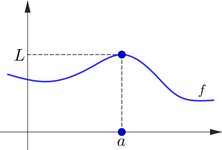
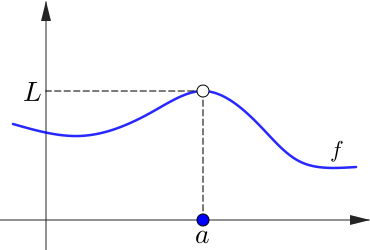
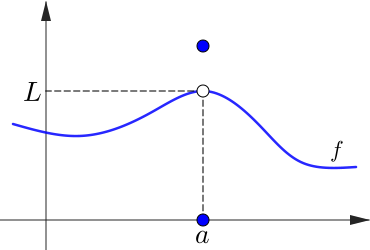
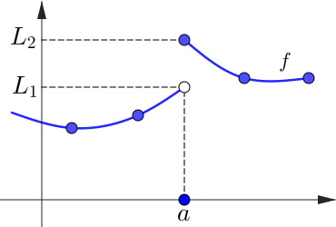

Lecture 21
We will need to consider derivatives of functions of more than one variable. To do this, we first check how the familiar concepts of limits and continuity extend to functions of more than one variable. This material is covered in Section 14.2 of Stewart.
3.1.1 Review of the 1-variable case
Let $f:D\to\R$ be a function with domain $D$ an open subset of $\R$. For $a\in D$ we say that the limit $\displaystyle{\lim_{x \to a} f(x)}$ exists if and only if, (i) the limit from the left exists, (ii) the limit from the right exists, and (iii) these two limits coincide, i.e., \[ \lim_{x \to a^-} f(x)=\lim_{x \to a^+} f(x). \]
3.1.1 Review of the 1-variable case
Let $f:D\to\R$ be a function with domain $D$ an open subset of $\R$. For $a\in D$ we say that the limit $\displaystyle{\lim_{x \to a} f(x)}$ exists if and only if, (i) the limit from the left exists, (ii) the limit from the right exists, and (iii) these two limits coincide, i.e., \[ \lim_{x \to a^-} f(x)=\lim_{x \to a^+} f(x). \]
Furthermore, if the limit exists and is equal the actual value of $f$ at $a,$ i.e., if \[ \lim_{x \to a^-} f(x) = \lim_{x \to a^+} f(x) = f(a), \] we say that $f$ is continuous at $x=a.$
If $f$ is continuous on all of $D$ we say that $f$ is a continuous function on $D$.
|  |  |
|  |  |
3.1.1 Review of the 1-variable case
We can also consider the limit for points on the boundary of the domain $D$ of a function. For example, if $f:(0,2)\to\R$ is defined by $f(x)=1/x,$ then \[ \lim_{x\to 2^{-}}f(x)=\frac{1}{2} \]
but $ \ds \lim_{x\to 0^{+}} f(x) $ does not exist.
3.1.1 Review of the 1-variable case
Another instructive example is $f:\R\backslash\{0\}\to \R$ given by $f(x)=x^2.$ The domain is now the punctured real line, i.e., $D=(-\infty,0)\cup(0,\infty),$ but \[ \lim_{x\to 0^-} f(x)=\lim_{x\to 0^+} f(x)=0. \]
In this situation we also say that $\ds\lim_{x\to 0} f(x)$ exists and in fact one can fix the hole by defining $f(0)=0,$ to extend $f$ to a continuous function on all of $\R.$
3.1.1 Review of the 1-variable case
Important remark: Never, ever compute $\ds\lim_{x\to a}f(x)$ by blindly substituting $\,x=a\,$ in $\,f.$ For example, if \[ f(x)=\begin{cases} x^2 & \text{for $x\neq 3$} \\ \pi & \text{for $x=3$}, \end{cases} \]
then $\ds \lim_{x\to 3} f(x)$ exists and is given by $9$ which is not equal to $\pi$: the function $f$ is not continuous at $x=3$.
3.1.1 Review of the 1-variable case
As a second example, if $f:D\to \R$ with $D=\R\backslash\{1\}$ is given by \[ f(x)=\frac{x^2-1}{x-1}, \] then $\ds \lim_{x\to 1}f(x)=2$.
Those (and there will be some) who write "This limit gives $0/0$ which does not exist" should hang their heads in shame.
3.1.2 Multivariable limits
When $f$ is a function of more than one variable, the situation is more interesting. There are more than two ways to approach a given point of interest. Consider the function \[ f(x,y)=\frac{x^2}{x^2+y^2} \] with domain given by $\R^2\backslash\{(0,0)\}$.
To see the graph of $f$ in Matlab, type
ezsurf('x^2/(x^2+y^2)')
3.1.2 Multivariable limits
Next we consider the limit as $(x,y)\to(0,0)$.
(i) Approaching the origin along $y=0$:
(ii) Approaching the origin along $x=0$:
Does $\displaystyle{\lim_{(x,y)\ra(0,0)}f(x,y)}$ exist?
3.1.2 Multivariable limits
In general, for the limit $\displaystyle{ \lim_{(x,y) \to (a,b)} f(x,y)}$ to exist, it is necessary that every path in $D$ approaching $(a,b)$ (the point $(a,b)$ itself may or may not be in $D$) gives the same limiting value. This gives us the following method for finding if a limit does not exist.
Test for showing no limit exists
If $\begin{cases} f(x,y)\to L_1 & \text{as $(x,y) \to (a,b)$ along the path $C_1\in D$} \\[2mm] f(x,y)\to L_2 & \text{as $(x,y) \to (a,b)$ along the path $C_2\in D$} \end{cases}$
such that $L_1\neq L_2,$ then the limit $\ds{\lim_{(x,y) \to (a,b)}f(x,y)}$ does not exist.
Test for showing no limit exists
If $\begin{cases} f(x,y)\to L_1 & \text{as $(x,y) \to (a,b)$ along the path $C_1\in D$} \\[2mm] f(x,y)\to L_2 & \text{as $(x,y) \to (a,b)$ along the path $C_2\in D$} \end{cases}$
such that $L_1\neq L_2,$ then the limit $\ds{\lim_{(x,y) \to (a,b)}f(x,y)}$ does not exist.
Important remark: The above notation is somewhat deficient and perhaps one should write \[ \displaystyle{\lim_{(x,y) \rightarrow_D (a,b)}f(x,y)} \] to indicate that only paths in $D$ terminating in $(a,b)$ (which itself may or may not be in $D$) are considered. For example, if $f(x,y)=x^2+y^2$ with $D=\{(x,y):~x^2+y^2\lt 1\}$ then $\lim_{(x,y)\to (1,0)} f(x,y)$ exists and is $1$.
Important remark: The above notation is somewhat deficient and perhaps one should write \[ \displaystyle{\lim_{(x,y) \rightarrow_D (a,b)}f(x,y)} \] to indicate that only paths in $D$ terminating in $(a,b)$ (which itself may or may not be in $D$) are considered. For example, if $f(x,y)=x^2+y^2$ with $D=\{(x,y):~x^2+y^2\lt 1\}$ then $\lim_{(x,y)\to (1,0)} f(x,y)$ exists and is $1$.
However, if \[ f(x,y)=\begin{cases} x^2+y^2 & \text{for $D=\{(x,y):~x^2+y^2\lt1\}$} \\ 0 & \text{for $D=\{(x,y):~x^2+y^2\gt1\}$} \end{cases} \] then $\lim_{(x,y)\to (1,0)} f(x,y)$ does not exist.
Let $D=\R\backslash\{(0,0)\}$ and $f:D\to \R$ be given by $\displaystyle f(x,y)=\frac{x^2-y^2}{x^2+y^2}. $ Show that $\lim_{(x,y)\to (0,0)} f(x,y)$ does not exist.
With the same $D$ as above but now $\displaystyle f(x,y)=\frac{xy}{x^2+y^2}, $ show that $\lim_{(x,y)\to (0,0)} f(x,y)$ does not exist.